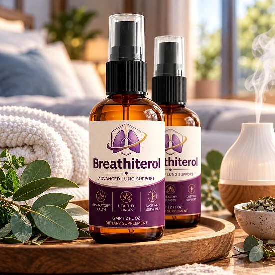
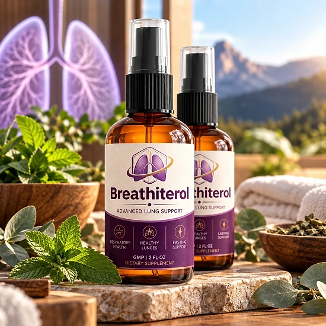
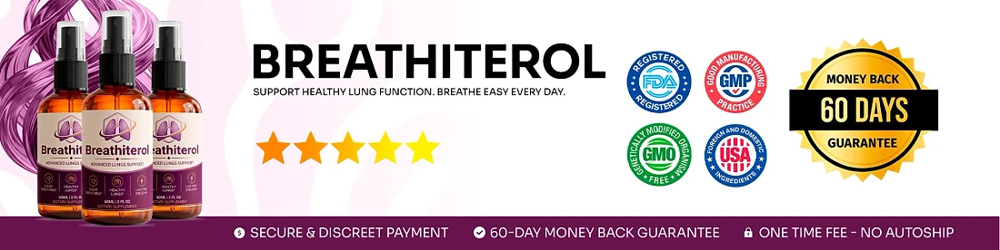

What Is Breathiterol And How Does It Work?
Breathiterol is a dietary supplement in oral spray form, sold in a 2 fl oz (60 mL) bottle labeled "Advanced Lung Support". It was created to support healthy breathing, clear airways and overall respiratory wellness as part of a daily routine.
According to the official website, Breathiterol is a natural botanical formula built around three plant extracts: Mullein leaf extract (10:1), Ginger root extract and Organic Lemon extract. Instead of capsules or tablets, you spray the liquid directly into your mouth or onto your tongue once a day.
How is it designed to work? The brand explains that each extract has its own role. Mullein is included to help loosen and thin mucus so the airways feel clearer. Ginger is there to help relax the respiratory passages and calm irritation in the chest. Organic Lemon is added to refresh the upper respiratory tract and leave the breath clean and fresh.
The brand says the goal is deeper, more comfortable breathing through the day, without relying on synthetic products or quick fixes, and with a format that takes only a few seconds each morning.
Orders are processed by BuyGoods, and every purchase is a one-time payment with no auto-ship, according to the official FAQ.
Results may vary from person to person, and a supplement works best alongside healthy habits such as staying active, drinking enough water, sleeping well and avoiding smoke. It is not a replacement for inhalers or any treatment prescribed by your doctor, and the website does not promise a fixed timeline, so it is fair to give the routine a few weeks before judging how you feel.
Breathiterol is a dietary supplement and is not intended to diagnose, treat, cure, or prevent any disease.
Breathiterol Ingredients
The official sales page lists three botanical ingredients in the Breathiterol spray. The formula is short on purpose, with each plant chosen for a specific role in respiratory comfort:
Mullein (Verbascum thapsus) Leaf Extract 10:1: a concentrated herbal extract traditionally used to support clear airways and to help the body move mucus out of the chest.
Ginger (Zingiber officinale) Root Extract: a well-known root associated with soothing the respiratory passages and easing chest tightness.
Organic Lemon Extract: a citrus extract rich in antioxidants, included to refresh the mouth and throat and support clean, fresh breath.
The website does not publish the full Supplement Facts panel, so the amount of each extract per serving is not shown online. The descriptions above reflect how these plants are traditionally known, not proven results. Check the label on the bottle you receive and show it to your doctor, especially if you take other supplements or regular medication. A short formula also makes it easier to spot an ingredient you may already be sensitive to before you start.
Breathiterol Side Effects
The official website says Breathiterol is made under strict quality control standards and does not list specific side effects. It also describes it as an active supplement and recommends not exceeding the suggested serving.
According to the FAQ, pregnant or nursing women, anyone under 18 and people with a known medical condition should consult a physician before use. This is especially important for anyone who has a chronic lung condition and already follows a treatment plan, because a spray should never replace prescribed medication or an inhaler.
Ginger may interact with blood thinners and can cause mild stomach discomfort in sensitive people, and plant extracts such as mullein can cause reactions in anyone allergic to these plants. Lemon extract may feel slightly tangy or tingly in the mouth.
Since the full label is not published online, bring the bottle to your appointment. Stop using it and seek medical advice right away if you notice shortness of breath that gets worse, swelling, a rash or any other unusual reaction after you start. Keeping the original bottle and its label at hand makes it easier for a health professional to check exactly what you used.
Breathiterol Dosage
According to the official FAQ, the directions are simple: shake the bottle, then apply 4 sprays (0.60 mL) directly into your mouth or onto your tongue, once a day.
The brand recommends using it in the morning, so the airways feel comfortable and breathing stays easy throughout the day. Using it at the same time every day, for example right after brushing your teeth, makes the habit easier to keep.
Do not go beyond the suggested serving, since the website describes Breathiterol as an active supplement. If you take medication, use an inhaler or have a lung condition, ask your doctor whether the spray fits into your routine before you begin, and keep following the plan your doctor gave you.
The brand suggests using it consistently for several months so the botanical ingredients can work steadily. Results vary from person to person, and keeping a short note of how you feel each week can help you judge the routine honestly.
Breathiterol works best together with fresh air, regular movement, good hydration and a smoke-free environment, both at home and at work, every single day.
Breathiterol – Refund Policy
Every order of Breathiterol is covered by a 60-day Results or Refund Guarantee counted from the date of purchase, which gives you time to try the spray and decide whether it is right for you.
According to the refund policy on the official website, there is a minimum trial period of 30 days, and the return process must start within 60 days of the purchase date. Only sealed bottles are eligible, shipping and customs fees are not refunded, return shipping is paid by the customer, and a 20% restocking fee is deducted from the total.
Step 1 – Request the authorization: before sending anything, ask for the return authorization (RMA) by emailing the support team at contact@customercs.com. The team usually replies within 48 business hours.
Step 2 – Send the sealed bottles: ship all sealed bottles from your order to the distribution center, with the RMA number written clearly on the outside of the package.
Step 3 – Include the documents: add the original invoice, or your order number, full name, purchase email and phone number.
Step 4 – Receive your refund: once the items are received and verified, the refund goes to the original payment method and may take 5 to 10 business days to appear on your statement.
Breathiterol Customer Reviews
-
Jessica Martinez — Austin, TXVerified Purchase – 6 Bottles
“I’ve struggled with seasonal congestion for years, and it always made me feel exhausted and foggy. Since I started using Breathiterol, I can actually breathe clearly through my nose again. It’s like a weight has been lifted off my chest. I use it every morning, and my entire day feels different — more energy, more focus, just better overall.”
-
James Miller — Chicago, ILVerified Purchase – 6 Bottles
“I quit smoking three years ago, but my lungs never felt the same. I’d get winded going up stairs and always had this tightness in my chest. Breathiterol changed everything. Within two weeks, I noticed I could take deeper breaths without that uncomfortable feeling. Now I actually look forward to my morning walks instead of dreading them.”
-
Samantha Lee — Miami, FLVerified Purchase – 6 Bottles
“… A friend recommended Breathiterol, and honestly, I was skeptical. But after just a few days, I noticed a real difference. Now I sleep through the night and wake up actually feeling rested. It’s been a game-changer.”
Breathiterol – Where To Buy
Breathiterol is sold through its official website, where orders are completed through a secure checkout from BuyGoods, an established online retailer. According to the FAQ, every purchase is a one-time payment with no auto-ship, recurring charges or hidden fees.
Sprays listed by unknown third-party sellers may look the same, but there is no way to verify their origin, their expiry date or how they were stored, which raises real concerns about quality and safety. Purchases made outside the official source may not be covered by the 60-day guarantee.
That is why most buyers prefer to order Breathiterol directly from the official website. Going to the source means receiving the authentic original product, with access to the support team and the full guarantee.
Before completing your order, make sure you are on the official Breathiterol website to avoid counterfeit products. Checking the web address in your browser before you pay takes only a moment and helps protect your order.
To ensure you’re getting the authentic product, most users choose to visit the official website.
Is Breathiterol A Scam?
Based on what the official website shows, Breathiterol does not appear to be a scam. It is a real oral spray supplement for respiratory support, sold through BuyGoods, an established retailer.
Several points speak in its favor: the three botanical ingredients are named on the website, the directions are clear, there is a support email with a stated reply time, the refund rules are written out step by step, and every order is a one-time payment without auto-ship.
There are also points to keep in mind. The website does not publish the full Supplement Facts panel, so the amount of each extract is unknown. Part of the bonus material on the site talks about topics that have nothing to do with breathing, which looks copied from other products. The refund policy is also stricter than many: only sealed bottles qualify, return shipping is paid by the customer, and a 20% restocking fee applies.
For adults who want a simple daily herbal spray to support clear, comfortable breathing, Breathiterol may be worth considering, ideally ordered from the official website and reviewed first by a doctor, especially by anyone who has a lung condition or uses an inhaler.
For those who want to verify product details or check current availability, the official Breathiterol website remains the safest option.

Check Availability On Official Website
